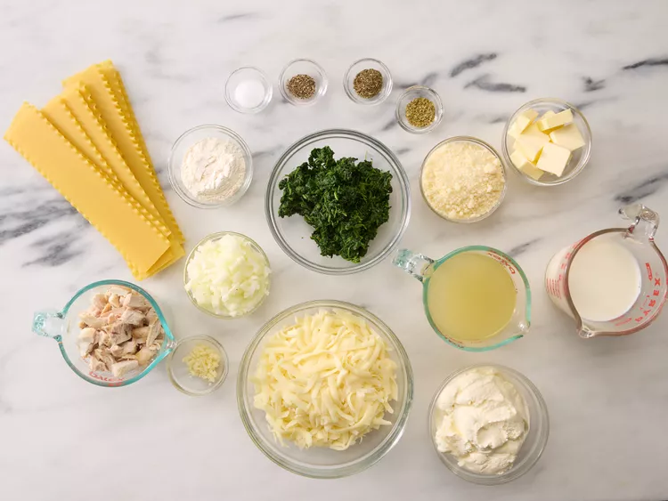
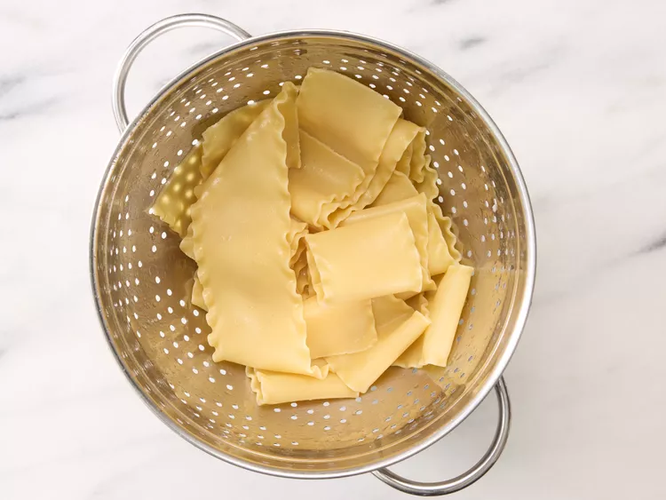
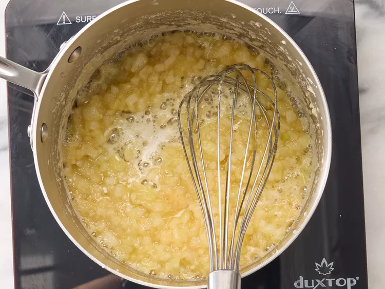
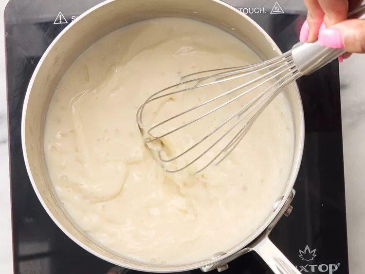
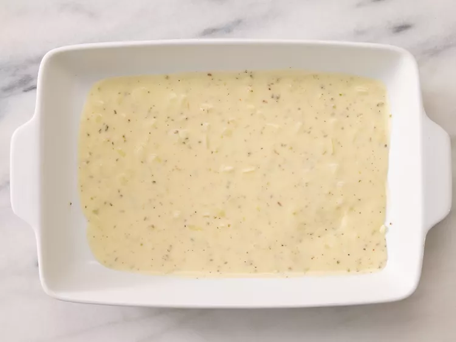
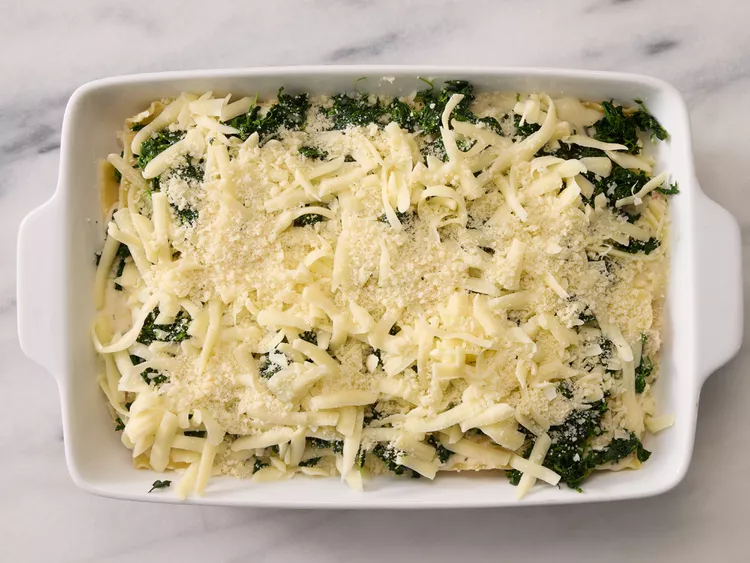
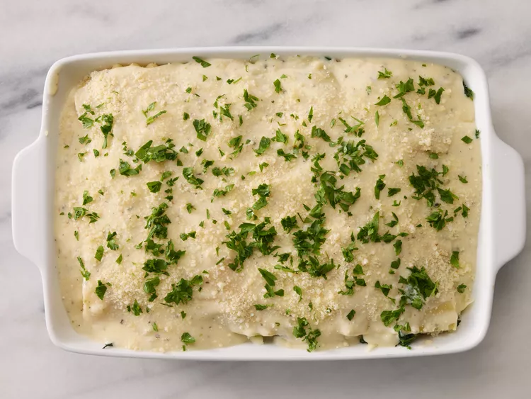
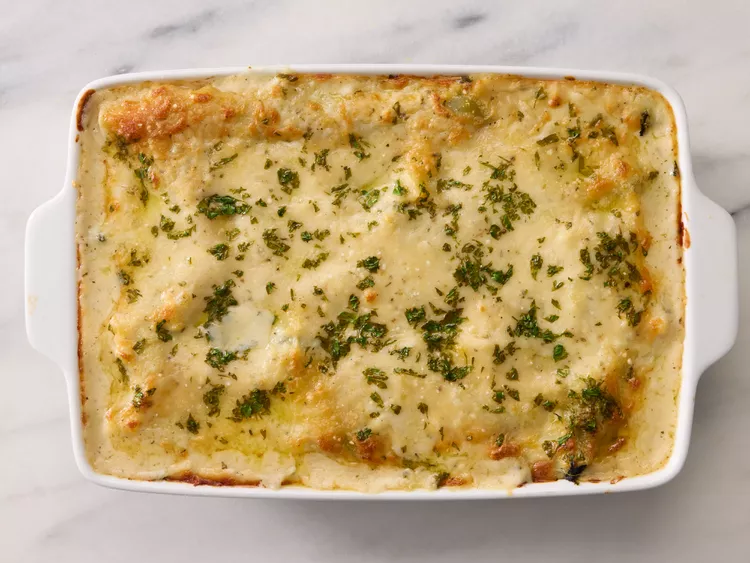
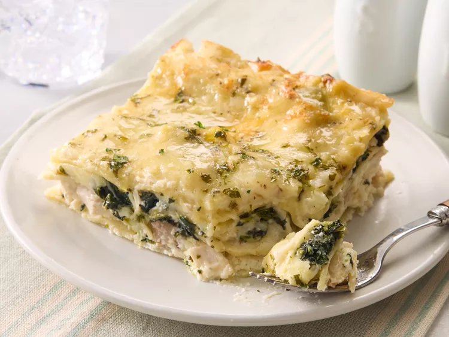

Home
Lasagna Recipe

Description
This white chicken lasagna recipe is a satisfying and crowd-pleasing twist
on a classic Italian favorite.
Original recipe yields 12 servings
Ingredients:
- 9 lasagna noodles
- ½ cup butter
- 1 onion, chopped
- 1 clove garlic, minced
- ½ cup all-purpose flour
- 2 cups chicken broth
- 1 ½ cups milk
- 1 teaspoon salt
- 4 cups shredded mozzarella cheese, divided
- 1 cup grated Parmesan cheese, divided
- 1 teaspoon dried basil
- 1 teaspoon dried oregano
- ½ teaspoon ground black pepper
- 2 cups ricotta cheese
- 2 cups cubed, cooked chicken meat
- 2 (10 ounce) packages frozen chopped spinach, thawed and drained
- 1 tablespoon chopped fresh parsley
Steps:
Step 1
- Gather all ingredients and preheat the oven to 350 degrees F

Step 2
-
Bring a large pot of lightly salted water to a boil. Add lasagna noodles
and cook for 8 to 10 minutes or until al dente; drain and rinse with
cold water.

Step 3
-
Meanwhile, melt butter in a large saucepan over medium heat; stir in
onion and garlic. Whisk in flour until lightly browned and onion is
tender, about 2 minutes. Add chicken broth, milk, and salt; cook,
whisking continuously, for 1 minute.

Step 4
-
Stir in 2 cups mozzarella and 1/4 cup Parmesan until well combined.
Season with basil, oregano, and black pepper; remove from heat and set
aside.

Step 5
-
Spread 1/3 of the sauce mixture in the bottom of a 9x13-inch baking
dish.

Step 6
- Layer with 3 lasagna noodles, ricotta, and chicken.

Step 7
-
Arrange 3 lasagna noodles over the chicken and layer with 1/3 of the
sauce mixture, spinach, remaining 2 cups mozzarella, and 1/2 cup
Parmesan.

Step 8
-
Arrange remaining noodles over cheese and spread remaining sauce evenly
over noodles. Sprinkle with parsley and remaining 1/4 cup Parmesan.

Step 9
- Bake in the preheated oven for 35 to 40 minutes.

Step 10
- Serve and enjoy!
